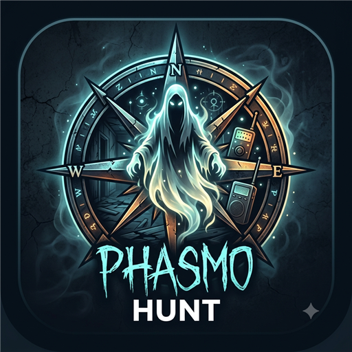
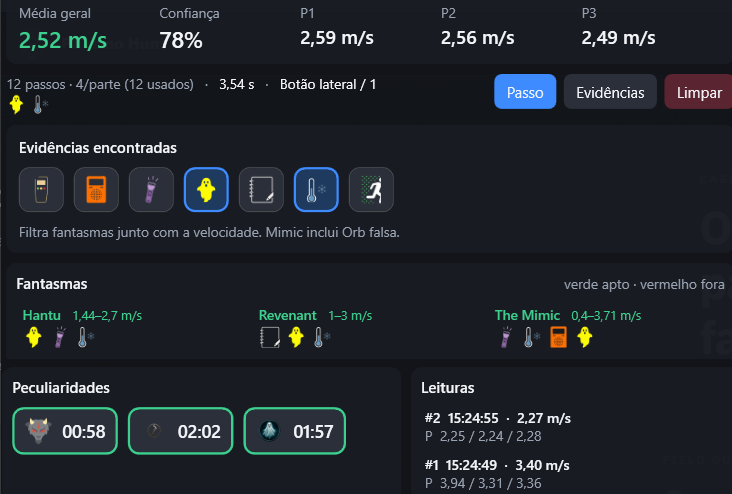

Velocidade dos passos
Registre passos com a tecla 1 ou o botão lateral. Após 3s sem cliques, a leitura fecha sozinha em 3 médias (±0,10 m/s).

Phasmo HuntCASE FILE · WINDOWS · OFFLINE
Meça a velocidade dos passos, cruze com evidências e acompanhe peculiaridades. Tudo inserido por você — nada lê o processo do jogo.

INVESTIGATION TOOLS
Assistente Always-On-Top — catálogo offline, filtros manuais, atalhos globais, zero acesso ao jogo.
Registre passos com a tecla 1 ou o botão lateral. Após 3s sem cliques, a leitura fecha sozinha em 3 médias (±0,10 m/s).
Porcentagem (0–100%) que mostra o quão regulares foram os intervalos entre os passos. Alta = ritmo estável e leitura mais segura para filtrar; baixa = vale repetir a medição. Não identifica o fantasma — avalia a qualidade do clique.
Filtre 30 fantasmas por evidência e velocidade. Tooltips nos ícones; The Mimic inclui Orb falsa.
Clique no nome do fantasma para alternar entre verde (apto) e vermelho (fora). Override manual na lista.
Opção na lista e nas configurações: com ativos, fantasmas vermelhos somem e só ficam os candidatos.
Shift+1 Demon cooldown, Shift+2 Incenso (3 min), Shift+3 ciclo Obambo paz/agressivo.
Always-On-Top, modo compacto, transparência e escala salvos localmente. Interface em pt-BR e EN. Limpar com Shift+L.
FIELD GUIDE
Fluxo rápido para uma leitura de velocidade confiável.
Pressione 1 ou o botão lateral do mouse a cada passo (mínimo útil: 6 cliques).
Sem novos toques, a leitura finaliza e divide em P1 / P2 / P3.
Veja média, padrão (estável/acelerando/…), confiabilidade e fantasmas compatíveis. Clique no nome para marcar apto ou fora.
Refine o filtro e use peculiaridades (Shift+1/2/3). Oculte os fora se quiser só os candidatos. Shift+L limpa a sessão.
RELEASE
Windows · funciona offline. O binário é hospedado fora do GitHub; versões ficam listadas nas Releases.
CLEARANCE
É um overlay de apoio manual — não é cheat client. Toda informação é inserida por você.